→ ฝึกกับโจทย์จริง: Lung Pressure Influence Diagnostics (Assignment 4a-i)
Lecture 4 — Regression Diagnostics (Part II)
บทนี้ต่อจาก Lecture 3 (เช็ค assumption ของ error) มาเรื่องเคสข้อมูลรายจุด — จุดไหนในข้อมูลที่ผิดปกติ, ผิดปกติแบบไหน, และผิดปกติมากพอจะ "ทำลาย" ผลการวิเคราะห์หรือไม่ นี่คือทักษะการเช็ค assumption ระดับละเอียดที่สุดของวิชานี้ และเป็นจุดที่ข้อสอบชอบทดสอบ 3 คำที่ฟังดูคล้ายกันแต่ไม่ใช่คำเดียวกัน: outlier, leverage point, และ influential point.
mtcars (ในตัวอย่าง fit lm(mpg~., data=mtcars), n=32, p=10 ตัวแปรอิสระ จึงมี p+1=11 พารามิเตอร์) กับ dataset co2 จาก package AppRegR (n=177 ประเทศ) — ตัวเลข n, p ที่ปรากฏใน rule of thumb ทุกจุดของบทนี้อ้างอิงจากสองชุดข้อมูลนี้เท่านั้น จำไว้เพื่อเช็คว่าทำไม threshold แต่ละจุดถึงมีค่าตามที่เห็นในสไลด์จริง
นิยามจากสไลด์ (ตรง ๆ):
สำหรับ simple linear regression สไลด์แบ่งการเบี่ยงเบนออกเป็น 2 มิติที่แยกกันเด็ดขาด: เบี่ยงเบนในค่า Y (ให้ X คงที่) กับเบี่ยงเบนในค่า X — และจุดที่จะกลายเป็น "influential" ต้องเบี่ยงเบนในทั้งสองมิติพร้อมกัน:
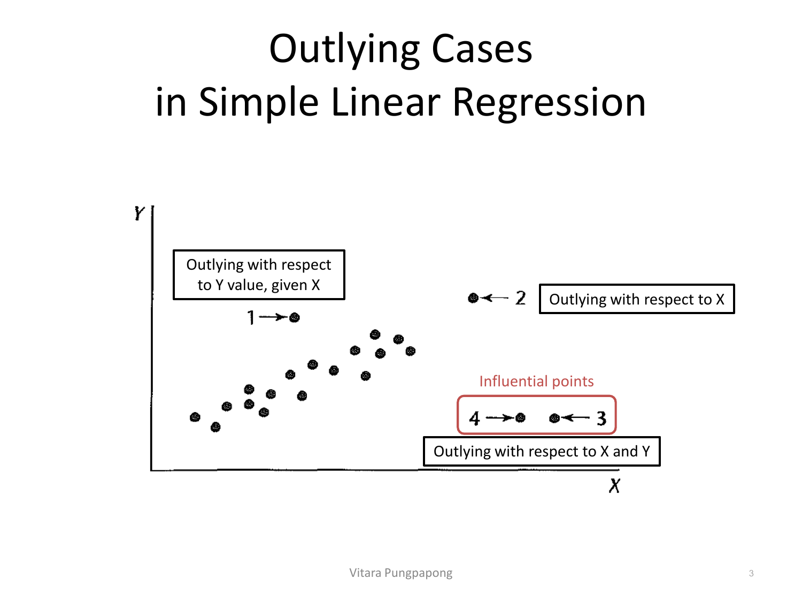
อ่านจุดทั้ง 4 ในภาพทีละจุด:
สรุปเป็นกฎ 3 ข้อที่ต้องจำ:
สำหรับ multiple linear regression ที่พล็อต scatter ตรง ๆ ไม่ได้ (มีตัวแปรอิสระหลายตัว) ใช้ hat matrix วัด leverage แทน สมบัติสำคัญ 2 ข้อของ diagonal element hii:
hii คือระยะห่างระหว่างค่า X ของเคสที่ i กับค่าเฉลี่ยของ X ทั้งหมด — ยิ่ง X ของเคสนั้นห่างจากค่าเฉลี่ยของกลุ่มมาก hii ยิ่งเข้าใกล้ 1 (สังเกตว่าผลรวมของ hii ทั้งหมดคงที่เสมอที่ p+1 พารามิเตอร์ ไม่ว่า n จะเท่าไร — นี่คือเหตุผลที่ rule of thumb ด้านล่างหารด้วย n เพื่อปรับตามขนาดตัวอย่าง):
ใช้ mtcars เป็นตัวอย่างตลอดบทนี้: lm(mpg~., data=mtcars) มี n=32, p=10 ตัวแปรอิสระ (cyl, disp, hp, drat, wt, qsec, vs, am, gear, carb) ดังนั้น p+1=11 → cutoff = 2×11/32 = 0.6875. โค้ด R และผลลัพธ์จริง:
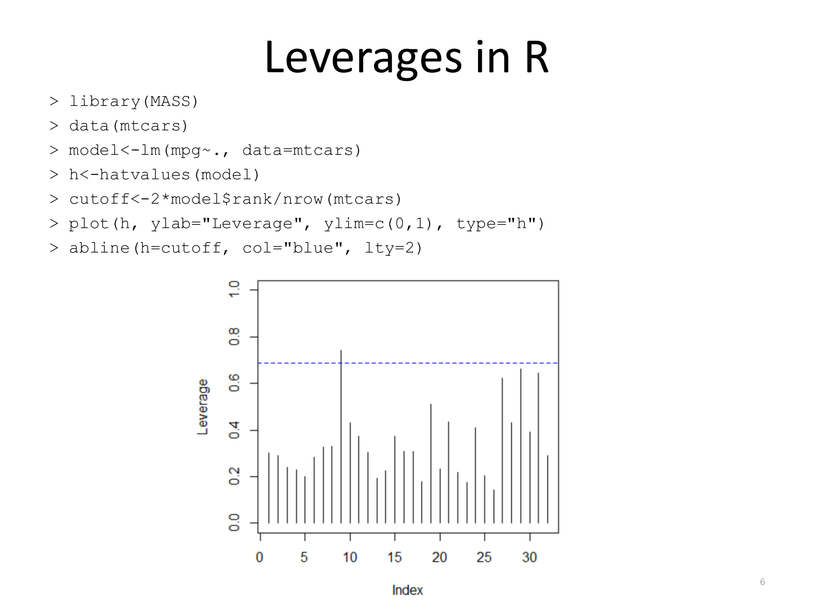
อ่านกราฟ: มีแท่งเดียว (ที่ index ประมาณ 9) ที่พุ่งขึ้นไปแตะเส้นตัด (cutoff) สีน้ำเงินที่ 0.6875 พอดี ส่วนแท่งอื่นทั้งหมดอยู่ต่ำกว่าเส้นชัดเจน (สูงสุดรองลงมาราว 0.6) — สรุปได้ทันทีว่ามีเคสเดียวในข้อมูลชุดนี้ที่ถือว่า outlying ในแกน X ตาม rule of thumb (จะยืนยันด้วยตัวเลขแม่นในหัวข้อ 7 ว่าคือ Merc 230, h99=0.742).
เมื่อรู้แล้วว่า residual ei = Yi − Ŷi ธรรมดายังเปรียบเทียบข้ามเคสไม่ได้ตรง ๆ (variance ของแต่ละ residual ไม่เท่ากัน ขึ้นกับ hii) สไลด์แนะนำ 2 มาตรวัดตามลำดับ: (1) Internally Studentized Residuals (2) Studentized Deleted Residuals — หัวข้อนี้เริ่มจากตัวแรก:
สังเกตว่าสูตรนี้หาร ei ด้วย (1−hii) ใต้ราก — เคสที่มี leverage สูง (hii ใกล้ 1) จะมี s[ei] เล็กลง ทำให้ ri ถูก "ขยาย" ขึ้นเทียบกับ residual ดิบ นี่คือเหตุผลที่ hii กับ ri ต้องดูคู่กันเสมอ ไม่ใช่แยกกันคนละเรื่อง.
ปัญหาของ internally studentized residual: ถ้าเคสนั้นเป็น outlier ที่รุนแรงมาก มันจะดึง MSE ให้สูงขึ้นเอง (เพราะ MSE คำนวณจาก residual ของทุกเคสรวมถึงตัวมันเอง) ทำให้ ri ของมันเองถูกหารด้วย MSE ที่ถูกบวมขึ้นจากตัวมันเอง — ผลคือ ri อาจดูไม่รุนแรงเท่าที่ควร (เรียกว่า masking effect) ทางแก้คือคำนวณ MSE โดยไม่รวมเคสนั้น:
ข่าวดี: ไม่ต้อง fit โมเดลใหม่ n รอบเพื่อหา MSE(i) แต่ละตัว เพราะพิสูจน์ได้ว่าคำนวณจากผล fit เพียงครั้งเดียวได้เลย:
Studentized deleted residual มีอีกชื่อว่า Externally Studentized Residuals (เพราะ MSE(i) มาจาก "ภายนอก" เคส i) ใน R คำนวณด้วยฟังก์ชันสำเร็จรูป:
> e<-resid(model) # residuals
> h<-hatvalues(model) # leverage
> r<-resid(model)/sqrt(mse*(1-h)) # internally studentized
> int_stures<-rstandard(model) # ฟังก์ชันลัดของ r
> d<-resid(model)/(1-h) # deleted residuals
> ext_stures<-rstudent(model) # studentized deleted residuals (t_i)บนข้อมูล mtcars ค่า Absolute Studentized Deleted Residuals ของทุกเคสเทียบกับ cutoff แบบ Bonferroni (qt(1-0.05/(2*32), df-1) ≈ 3.6):
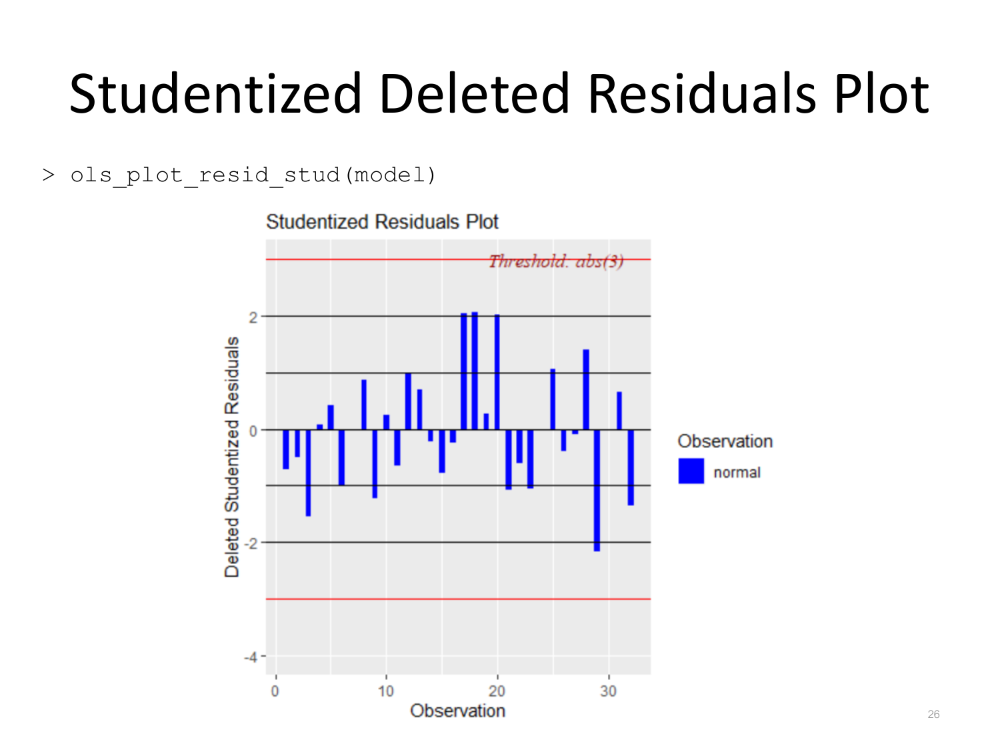
ols_plot_resid_stud(model) (Lecture 4, p.26)อ่านกราฟ:
เมื่อรู้ว่าเคสไหน outlying ใน X (leverage) และเคสไหน outlying ใน Y (residual) แล้ว คำถามต่อไปคือ "เคสไหนที่เมื่อตัดออก จะทำให้ผลการวิเคราะห์เปลี่ยนไปมาก" — สไลด์แบ่ง influence measure เป็น 2 กลุ่มตามสิ่งที่วัด:
DFFITS วัดว่า Ŷi เปลี่ยนไปเท่าไรถ้าตัดเคส i ออกแล้ว fit ใหม่:
สังเกตสูตร \( t_i \sqrt{h_{ii}/(1-h_{ii})} \): DFFITS คือ studentized deleted residual (จับ Y-outlier) คูณ กับพจน์ที่ขึ้นกับ leverage — นี่คือสูตรที่พิสูจน์ตรง ๆ ว่า influence = ฟังก์ชันร่วมของทั้ง residual และ leverage พร้อมกัน (ตรงกับที่อธิบายไว้ในหัวข้อ 1) ถ้า hii ต่ำมาก DFFITS จะเล็กแม้ ti จะใหญ่ และในทางกลับกัน.
Cook's Distance วัดผลรวมของการเปลี่ยนแปลงในค่าทำนายทั้ง n ค่า (ไม่ใช่แค่ค่าที่ i) เมื่อตัดเคส i ออก — เป็น aggregate influence measure:
สูตร equivalent ของ Di สำคัญมาก: สังเกตพจน์ \( (1-h_{ii})^2 \) อยู่ที่ตัวส่วน — เมื่อ hii เข้าใกล้ 1 (leverage สูงมาก) พจน์นี้เข้าใกล้ 0 ทำให้ Di พุ่งขึ้นได้รุนแรงแม้ residual ei จะไม่ได้ใหญ่มากก็ตาม — นี่คือกลไกทางคณิตศาสตร์ที่อธิบายว่าทำไม leverage point แม้ residual จะดูปกติ ก็ยังมีโอกาส "influential" ได้ (จะเห็นตัวอย่างจริงในหัวข้อ 7).
DFFITS/Cook's D บอกว่าเคสไหน "มีผลต่อค่าทำนาย" แต่ไม่บอกว่าสัมประสิทธิ์ตัวไหนโดยเฉพาะที่ถูกดึง — DFBETAS ตอบคำถามนี้ตรง ๆ:
DFBETAS มีค่าหนึ่งค่าต่อสัมประสิทธิ์ต่อเคส — ถ้าโมเดลมี p+1 พารามิเตอร์และ n เคส จะมี DFBETAS ทั้งหมด (p+1)×n ค่า ต้องพล็อตแยกทีละตัวแปร (จะเห็นในหัวข้อ 7).
COV RATIO วัดคนละมุม: ไม่ได้ดูว่าค่าประมาณ (point estimate) เปลี่ยนไปเท่าไร แต่ดูว่าความแม่นยำ (precision) ของการประมาณสัมประสิทธิ์เปลี่ยนไปเท่าไรเมื่อตัดเคส i ออก — เป็นอัตราส่วนของ determinant ของเมทริกซ์ variance-covariance ของโมเดลที่ตัดเคส i กับโมเดลเต็ม:
ตีความ:
influence.measures() และ plot(model,4)R มีฟังก์ชันสำเร็จรูปที่รวมทุกค่าไว้ในตารางเดียว — เคสไหนถูกตั้งค่าสถานะพิเศษ (flag) จะมี * ต่อท้าย:
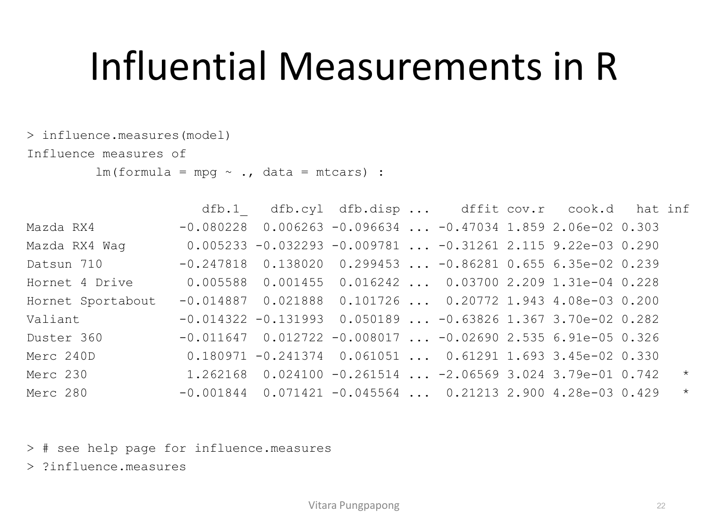
influence.measures(model) (Lecture 4, p.22)อ่านแถว Merc 230 (เคสที่ 9 ใน mtcars — ตัวเดียวกับที่แตะเส้น cutoff ในหัวข้อ 2!):
hat = 0.742 ซึ่งเกิน cutoff 0.6875 ที่คำนวณไว้แล้ว → เป็น leverage point ยืนยันชัดเจนcook.d = 3.79e-01 = 0.379 และ dffit = -2.06569 — ทั้งสองค่านี้เกิน threshold ของ mtcars (Cook's D cutoff 4/32=0.125 และ DFFITS cutoff 2√(11/32)≈1.17 ตามสูตรหัวข้อ 5) มาก จึงมี * กำกับ Merc 230 ในตารางยืนยันด้วยกราฟ Cook's distance มาตรฐานของ R (plot(model,4)):
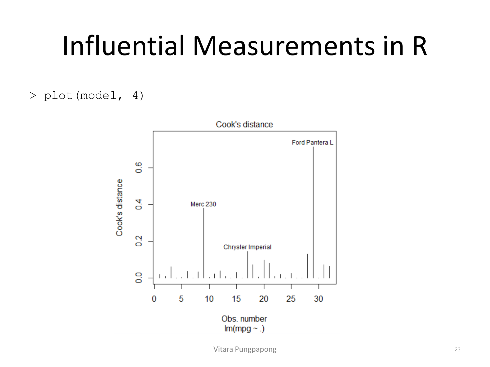
plot(model, 4) (Lecture 4, p.23)สามเคสที่โดดออกมาชัดเจน:
สามเคสนี้คือเป้าหมายที่ต้องตรวจสอบต่อในหัวข้อ 8 ว่าแต่ละเคสเป็น "leverage point ที่บังเอิญ influential" หรือ "outlier ที่บังเอิญ influential" หรือทั้งสองอย่าง
influence.measures(model) ด้านบน เคส Merc 230 มี cook.d = 0.379 (threshold ของชุดข้อมูลนี้คือ 4/32=0.125) และ hat = 0.742 (cutoff คือ 0.6875) จงสรุปว่า Merc 230 ควรถูกจัดเป็นอะไร (leverage point / outlier / influential point) และระบุ "action" ที่ควรทำต่อไปolsrr: ชุด Diagnostic Plot ครบ — และจุดที่ Leverage ≠ Influence เห็นชัดที่สุดolsrr เป็น R package ที่รวมฟังก์ชันพล็อต diagnostic สำเร็จรูปทั้งหมดในบทนี้ (สไลด์เตือนว่าต้องใช้ R ≥ 3.6.2 และ R client แบบ i386 — และthreshold ที่ package นี้ใช้อ้างอิงจากกฎสำหรับข้อมูลชุดใหญ่เท่านั้น เช่น 2√((p+1)/n) ไม่ใช่ 1 คงที่):
> install.packages('olsrr')
> library(olsrr)Internally studentized residuals (เทียบกับหัวข้อ 3 rule ri>2):
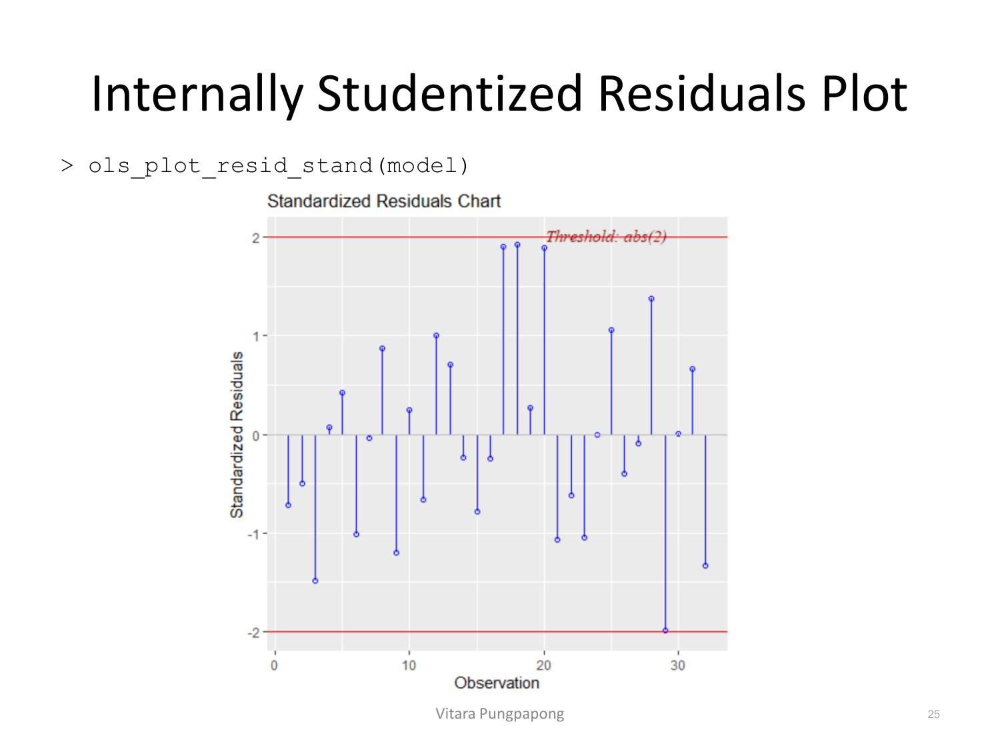
ols_plot_resid_stand(model) (Lecture 4, p.25)สังเกตว่ากราฟนี้ (internally studentized, threshold=2) มี 3 เคสที่แตะเส้น threshold พอดี (index ~17,18,20 สูงราว 1.9-2) ในขณะที่กราฟ studentized deleted residual ในหัวข้อ 4 (threshold=3) ไม่มีเคสไหนแตะเลย — สองกราฟนี้ใช้ข้อมูลชุดเดียวกันแต่ threshold ต่างกัน (2 vs 3) จึงให้ข้อสรุปต่างกันได้ ย้ำอีกครั้งว่าการเลือกกฎมีผลต่อข้อสรุปจริง.
ต่อมาคือกราฟที่สำคัญที่สุดของบทนี้: RStudent (studentized deleted residual) เทียบกับ Leverage บนแกนเดียวกัน — พล็อตนี้แยกประเภทจุดให้อัตโนมัติเป็น 3 กลุ่ม:
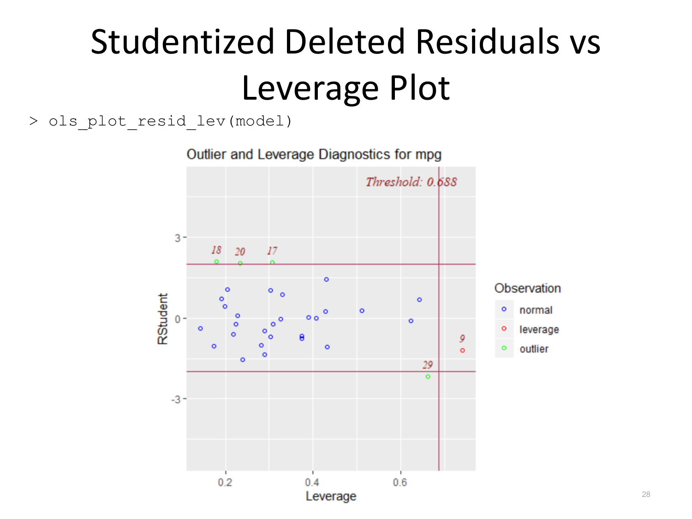
ols_plot_resid_lev(model) (Lecture 4, p.28)นี่คือหลักฐานเชิงตัวเลขที่ชัดที่สุดของบทนี้สำหรับความต่างระหว่าง outlier/leverage/influence — อ่านทีละกลุ่ม:
เชื่อมกับ Cook's D bar/chart (หัวข้อ 5 threshold 4/32=0.125):
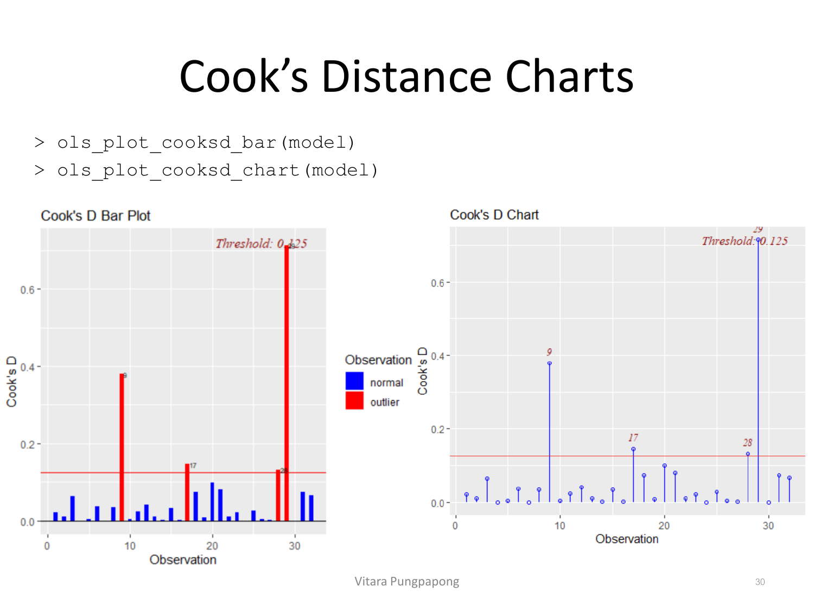
ols_plot_cooksd_bar/chart(model) (Lecture 4, p.30)ผลลัพธ์ยืนยันตรงกันทั้ง 3 ภาพ:
สไลด์ให้ทางเลือก 2 แนวทาง:
เกณฑ์ตัดสินใจที่สไลด์ implied (จากลำดับการนำเสนอ): ตรวจสอบเคสที่ถูกแฟล็กก่อนเสมอ (ข้อมูลถูกป้อนผิดหรือไม่ อยู่นอกขอบเขตการศึกษาหรือไม่) ถ้าใช่ค่อยตัดทิ้ง ถ้าเป็นข้อมูลจริงที่ถูกต้อง ให้ fit ทั้งโมเดลเต็มและ robust regression คู่กัน แล้วรายงานทั้งสองผล — จะเห็นแนวทางนี้ทำจริงในตัวอย่าง CO2 dataset ต่อไป.
ข้อมูลจาก 177 ประเทศทั่วโลก จาก scatter plot เบื้องต้นพบว่าทั้งตัวแปรอิสระและตัวแปรตามควร log-transform ก่อน (บทเรียนนี้ไม่ลงรายละเอียดการเลือก transform — อยู่ใน Lecture 3):
> library(AppRegR)
> data(co2, package="AppRegR")
> co2_model<-lm(log(CO2)~log(Area)+log(Population)+log(GDP)+
+ +log(Agri)+log(Industry)+log(Energy)+log(Forest), data=co2)
> summary(co2_model)โมเดลนี้มี n=177, ตัวแปรอิสระ 7 ตัว (Area, Population, GDP, Agri, Industry, Energy, Forest) → p+1=8 พารามิเตอร์ — ใช้ค่านี้เช็ค threshold ทุกตัวด้านล่างได้เลย:
ตัวเลขเหล่านี้ตรงกับ "Threshold" ที่ olsrr พิมพ์ไว้ในทุกกราฟด้านล่างเป๊ะ ลองเช็คได้จากภาพจริง:
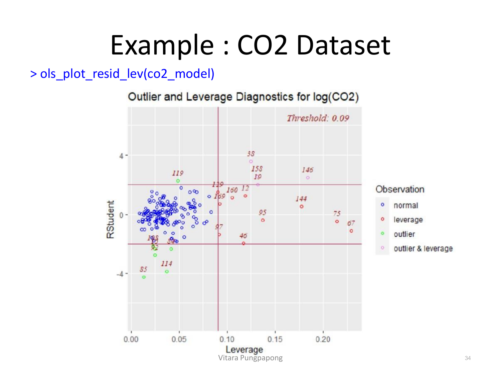
ols_plot_resid_lev(co2_model) (Lecture 4, p.34)โครงสร้างเดียวกับ mtcars แต่ซับซ้อนกว่าเพราะ n ใหญ่ — threshold ที่มุมขวาบนระบุ 0.09 ตรงกับที่คำนวณไว้ (2×8/177≈0.090) ยืนยันสูตรถูกต้อง:
โครงสร้าง 3 กลุ่มเดียวกับ mtcars ในหัวข้อ 8 ปรากฏซ้ำที่นี่พอดี เป็นหลักฐานว่าการแบ่งประเภทนี้ใช้ได้ทั่วไป ไม่ใช่เฉพาะ dataset เดียว
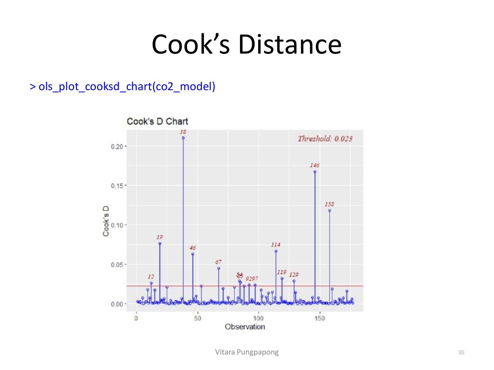
ols_plot_cooksd_chart(co2_model) (Lecture 4, p.35)Threshold ที่แสดงคือ 0.023 ตรงกับ 4/177≈0.0226 พอดี — ประเทศ 38 มี Cook's D สูงสุด (~0.21) สอดคล้องกับที่มันเป็นทั้ง outlier และ leverage point พร้อมกันในกราฟก่อนหน้า (ตรงกับกลไก "รุนแรงทั้งสองทางพร้อมกัน = influence สูงสุด" ที่พบใน Ford Pantera L ของ mtcars) ตามมาด้วยประเทศ 146 และ 158 (leverage point ล้วน ๆ จากกราฟก่อนหน้า) ที่ก็ยังมี Cook's D สูงเกิน threshold มาก — ยืนยันอีกครั้งว่า leverage point เพียงอย่างเดียวก็ influential ได้จริงในทางปฏิบัติ ไม่ใช่แค่ทฤษฎี.
DFBETAS ของ CO2 model แยกตามตัวแปร (พล็อตแบ่งเป็น 2 หน้าเพราะมี 8 สัมประสิทธิ์): หน้าแรกครอบคลุม Intercept, log(Population), log(Area), log(GDP) และหน้าที่สองครอบคลุม log(Agri), log(Energy), log(Industry), log(Forest):
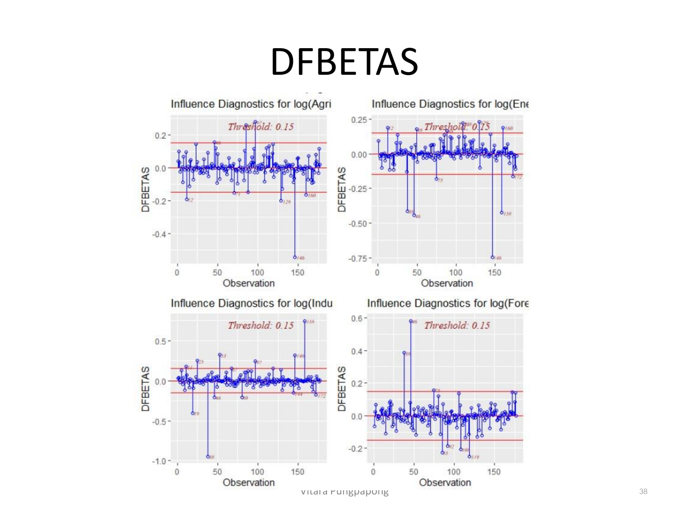
ols_plot_dfbetas(co2_model) (Lecture 4, p.38, หน้า 2 จาก 2)Threshold ที่กำกับทุกช่อง (Threshold: 0.15) ตรงกับสูตร 2/√177≈0.150 เป๊ะ — สังเกตประเทศ 146 (ซึ่งมี Cook's D สูงเป็นอันดับ 2 จากกราฟก่อนหน้า) มี DFBETAS ของ log(Agri) และ log(Energy) พุ่งลงไปถึง −0.5 ถึง −0.75 (เกิน threshold หลายเท่า) — แปลว่าประเทศนี้ไม่ได้แค่ influential ต่อค่าทำนายโดยรวม (Cook's D) แต่ influential ต่อสัมประสิทธิ์ของ log(Agri) และ log(Energy) โดยเฉพาะ ในหน้าแรก (ไม่แสดงภาพ) ประเทศเดียวกันก็แสดง DFBETAS สูงเกิน threshold บน log(Population) ด้วย — สรุปได้ว่าประเทศ 146 คือเคสที่ต้องตรวจสอบก่อนสรุปผลใด ๆ จากสัมประสิทธิ์เหล่านี้.
แทนที่จะ minimize ผลรวมกำลังสองของ residual (แบบ OLS) LMS minimizeค่ามัธยฐานของ residual กำลังสอง — มัธยฐานทนทานต่อค่าสุดโต่งกว่าผลรวมมาก เพราะไม่ถูกดึงด้วยจุดที่ residual ใหญ่ผิดปกติเพียงไม่กี่จุด:
> library(MASS)
> co2_lms<-lmsreg(log(CO2)~log(Area)+log(Population)+log(GDP)+log(Agri)
+ +log(Industry)+log(Energy)+log(Forest), data=co2)
> coef(co2_lms)
(Intercept) log(Area) log(Population) log(GDP)
-17.576396732 0.132096667 1.646917774 -0.073254662
log(Agri) log(Industry) log(Energy) log(Forest)
-0.004017242 0.632190437 1.720224742 -0.569381085สังเกตว่า lmsreg() ให้แค่ ค่าประมาณสัมประสิทธิ์ ไม่มี Std. Error/p-value ให้ในตัว (เพราะ distribution ของตัวประมาณ LMS ซับซ้อนกว่า OLS มาก ไม่มีสูตรปิดง่าย ๆ) — ข้อจำกัดนี้จะเห็นผลชัดในตารางเปรียบเทียบสุดท้าย (หัวข้อ 13) ที่ช่อง p-value ของ LMS ทุกช่องเป็น N/A.
เรียกอีกชื่อว่า M-estimator (Huber, 1964) — แนวคิดคือให้ทุกเคสมี "น้ำหนัก" wi ในการ fit โดยเคสที่ residual ใหญ่ (ดูเหมือน outlier) จะได้น้ำหนักน้อยลงเรื่อย ๆ ผ่านการวนซ้ำ (iterate) จนน้ำหนักลู่เข้าค่าคงที่ สองฟังก์ชันน้ำหนักที่นิยม:
ความต่างสำคัญ:
ผลลัพธ์จริงจาก R (สังเกตว่า Residuals ใน output ยังมีค่าติดลบ/บวกมากอยู่ที่ Min/Max เพราะเป็น residual ก่อนถ่วงน้ำหนัก ไม่ใช่หลัง):
> co2_huber<-rlm(log(CO2)~log(Area)+log(Population)+log(GDP)+log(Agri)
+ +log(Industry)+log(Energy)+log(Forest), data= co2,
+ method="M", psi=psi.huber)
> summary(co2_huber)
Coefficients:
Value Std. Error t value
(Intercept) -15.1294 1.8190 -8.3176
log(Area) 0.1417 0.0455 3.1118
log(Population) 1.2715 0.1214 10.4698
log(GDP) -0.1976 0.1143 -1.7293
log(Agri) -0.0065 0.1050 -0.0616
log(Industry) 1.2824 0.1560 8.2219
log(Energy) 1.5441 0.1362 11.3372
log(Forest) -0.3319 0.1085 -3.0587
Residual standard error: 0.6595 on 169 degrees of freedom> co2_bis<-rlm(log(CO2)~log(Area)+log(Population)+log(GDP)+log(Agri)
+ +log(Industry)+log(Energy)+log(Forest), data=co2,
+ method="M", psi=psi.bisquare, maxit=50)
> summary(co2_bis)
Coefficients:
Value Std. Error t value
(Intercept) -15.0127 1.8253 -8.2249
log(Area) 0.1407 0.0457 3.0791
log(Population) 1.2705 0.1219 10.4257
log(GDP) -0.2418 0.1147 -2.1087
log(Agri) 0.0004 0.1054 0.0037
log(Industry) 1.2550 0.1565 8.0184
log(Energy) 1.6356 0.1367 11.9680
log(Forest) -0.3286 0.1089 -3.0181
Residual standard error: 0.6588 on 169 degrees of freedomต่างจาก OLS ตรงที่ rlm() ให้ Value, Std. Error, t value ครบ (มี inference ให้ใช้จริง) แต่ไม่มี p-value ในตารางเลย — ต้องเรียกฟังก์ชันแยกต่างหากเพื่อทดสอบสมมติฐาน:
> library(sfsmisc)
> f.robftest(co2_huber, var="log(Area)")
robust F-test (as if non-random weights)
F = 9.6245, p-value = 0.002251
alternative hypothesis: true log(Area) is not equal to 0ผลลัพธ์: p-value=0.002251 < 0.05 → ปฏิเสธ H₀: βlog(Area)=0 ได้ที่ α=0.05 — สรุปว่า log(Area) ยังมีนัยสำคัญแม้จะ fit ด้วย robust regression แล้วก็ตาม (ยืนยันว่าไม่ใช่แค่ influential point ตัวใดตัวหนึ่งที่ทำให้สัมประสิทธิ์ตัวนี้มีนัยสำคัญใน OLS).
ทดสอบ \( H_0: \beta_j = 0 \) เทียบกัน 4 วิธีบนโมเดล CO2 เดียวกัน:
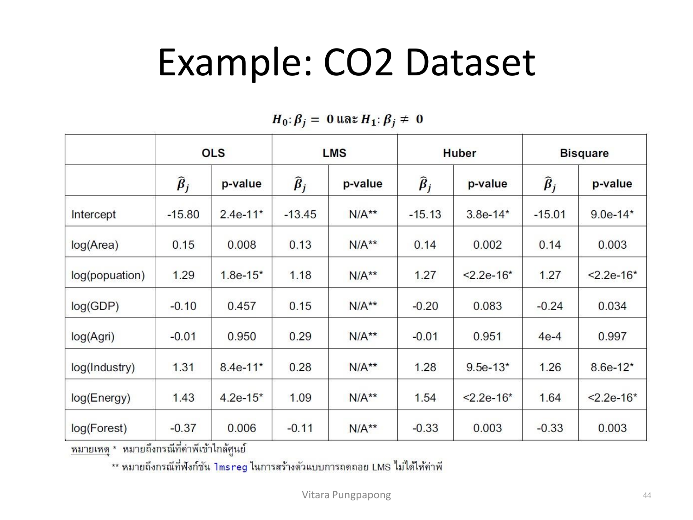
อ่านแถวที่น่าสนใจที่สุด — log(GDP):
ข้อสรุปเรื่อง log(GDP) เปลี่ยนไปตามวิธี fit ที่ใช้ ซึ่งบ่งชี้ว่าผล OLS สำหรับตัวแปรนี้ถูกดึงโดย influential point (เช่นประเทศ 146 ที่พบใน DFBETAS หัวข้อ 10) — เมื่อลดอิทธิพลของเคสเหล่านั้นด้วย robust regression สัมประสิทธิ์ log(GDP) แสดงตัวตนที่แท้จริงชัดขึ้น เทียบกับ log(Agri) ที่ไม่มีนัยสำคัญในทุกวิธี (p อยู่ระหว่าง 0.95-0.997 ตลอด) — แปลว่าผลของ log(Agri) ไม่ได้ถูกดึงโดย influential point แต่เป็นเพราะตัวแปรนี้ไม่มีความสัมพันธ์เชิงเส้นกับ log(CO2) จริง ๆ ในข้อมูลชุดนี้ (สอดคล้องกันทุกวิธี)
สังเกตคอลัมน์ LMS: p-value ทุกช่องเป็น N/A ตรงกับที่อธิบายไว้ในหัวข้อ 11 ว่า lmsreg() ไม่ให้ Std. Error/p-value มาให้ในตัว — นี่คือข้อจำกัดจริงของวิธีนี้ ทำให้ในทางปฏิบัติ Huber/Bisquare (ที่ต้องเรียก f.robftest() เพิ่ม) มักถูกใช้มากกว่าเมื่อยังต้องการทำ hypothesis test ประกอบ.
influence.measures(), plot(model,4), กราฟจาก olsrr) พร้อมเทียบ threshold ที่คำนวณเองกับที่ปรากฏในกราฟได้, และรู้จักทางแก้เมื่อเจอ influential point ทั้งการตัดทิ้งและ robust regression (LMS, Huber, Bisquare) พร้อมอ่านตารางเปรียบเทียบผลได้ว่าทำไมข้อสรุปถึงเปลี่ยนไปตามวิธี — ทักษะทั้งหมดนี้จะถูกใช้ต่อในการเลือกโมเดล (Lecture 5) ที่ต้องมั่นใจก่อนว่าโมเดลที่จะเทียบกันไม่ได้ถูกบิดเบือนโดย influential point ที่ยังไม่ได้ตรวจสอบ
ตารางนี้ไล่ทุกหน้าของ Lecture4.pdf ตั้งแต่หน้า 1 ถึง 44 — หน้าที่มี ✓ ถูกอธิบายและ/หรือใส่รูปในเนื้อหาข้างบนแล้ว ส่วนที่เหลือ (etc) เป็นหน้าปก/เนื้อหาที่ซ้ำกับกราฟอื่นในบทเดียวกันที่อธิบายไว้แล้ว
| หน้า | เนื้อหา | สถานะ |
|---|---|---|
| 1 | ปกเรื่อง "Lecture 4: Regression Diagnostics (Part II)" | etc — ปก |
| 2 | Outliers and Influential Points — นิยามเบื้องต้น | ✓ หัวข้อ 1 |
| 3 | Outlying Cases in SLR — ภาพ 4 จุดตัวอย่าง | ✓ หัวข้อ 1 (มีรูป) |
| 4 | Identifying Outlying X — สมบัติของ hat matrix diagonal | ✓ หัวข้อ 2 |
| 5 | Identifying Outlying X — rule of thumb h_ii>2(p+1)/n | ✓ หัวข้อ 2 |
| 6 | Leverages in R — โค้ด + กราฟ leverage บน mtcars | ✓ หัวข้อ 2 (มีรูป) |
| 7 | Identifying Outlying Y — รายการ 2 วิธี | ✓ หัวข้อ 3 |
| 8 | Internally Studentized Residuals — สูตร r_i, rule r_i>2 | ✓ หัวข้อ 3 |
| 9 | Deleted residuals — นิยาม d_i, สูตรลัด e_i/(1-h_ii) | ✓ หัวข้อ 4 |
| 10 | Deleted residuals — สูตร s²{d_i} | ✓ หัวข้อ 4 |
| 11 | Studentized Deleted residuals — t_i=d_i/s{d_i} | ✓ หัวข้อ 4 |
| 12 | Studentized Deleted Residuals — สูตรคำนวณลัด + rule of thumb | ✓ หัวข้อ 4 |
| 13 | Residuals in R — โค้ดคำนวณ r, int_stures, d, ext_stures | ✓ หัวข้อ 4 (โค้ด) |
| 14 | Studentized Deleted Residuals — กราฟ base R บน mtcars | etc — แนวคิดเดียวกับกราฟ olsrr ในหน้า 26 ที่อธิบายพร้อมรูปแล้ว ไม่ใส่ภาพซ้ำ |
| 15 | Identifying Influential Cases — รายการ 4 มาตรวัด | ✓ หัวข้อ 5 |
| 16 | DFFITS — สูตร + rule of thumb | ✓ หัวข้อ 5 |
| 17 | Cook's Distance — นิยาม D_i (ผลรวมทุกเคส) | ✓ หัวข้อ 5 |
| 18 | Cook's Distance — สูตร equivalent + rule of thumb | ✓ หัวข้อ 5 |
| 19 | DFBETAS — สูตร + rule of thumb | ✓ หัวข้อ 6 |
| 20 | COV RATIO — นิยามเชิงแนวคิด | ✓ หัวข้อ 6 |
| 21 | COV RATIO — สูตร + rule of thumb | ✓ หัวข้อ 6 |
| 22 | Influential Measurements in R — influence.measures() output | ✓ หัวข้อ 7 (มีรูป) |
| 23 | Influential Measurements in R — plot(model,4) | ✓ หัวข้อ 7 (มีรูป) |
| 24 | 'olsrr' R Package — แนะนำ + วิธีติดตั้ง | ✓ หัวข้อ 8 |
| 25 | Internally Studentized Residuals Plot (olsrr) | ✓ หัวข้อ 8 (มีรูป) |
| 26 | Studentized Deleted Residuals Plot (olsrr) | ✓ หัวข้อ 4 (มีรูป) |
| 27 | Studentized Deleted Residuals vs Fitted Values Plot | ✓ หัวข้อ 8 (อธิบายรวมกับหน้า 28) |
| 28 | Studentized Deleted Residuals vs Leverage Plot | ✓ หัวข้อ 8 (มีรูป — จุดสำคัญที่สุดของบท) |
| 29 | DFFITS Plot (olsrr) บน mtcars | ✓ หัวข้อ 8 (อ้างอิงตัวเลขในหัวข้อ 7-8) |
| 30 | Cook's Distance Charts (bar + chart) บน mtcars | ✓ หัวข้อ 8 (มีรูป) |
| 31 | DFBETAS Plot (olsrr) บน mtcars — 4 แผง | ✓ หัวข้อ 6 (อ้างอิงแนวคิดเดียวกับหน้า 38) |
| 32 | Remedies to Influential Points — รายการ | ✓ หัวข้อ 9 |
| 33 | Example: CO2 Dataset — แนะนำข้อมูล + โค้ด fit โมเดล log-log | ✓ หัวข้อ 10 |
| 34 | CO2 — ols_plot_resid_lev(co2_model) | ✓ หัวข้อ 10 (มีรูป) |
| 35 | CO2 — Cook's Distance ols_plot_cooksd_chart(co2_model) | ✓ หัวข้อ 10 (มีรูป) |
| 36 | CO2 — DFFITS ols_plot_dffits(co2_model) | etc — แนวคิดเดียวกับ DFFITS ที่อธิบายแล้วในหัวข้อ 5/8 (mtcars); ตัวเลข threshold 0.43 ของหน้านี้ถูกอ้างอิงในหัวข้อ 10 แล้วโดยไม่ใส่ภาพซ้ำ |
| 37 | CO2 — DFBETAS หน้า 1/2 (Intercept, log(Population), log(Area), log(GDP)) | ✓ หัวข้อ 10 (อธิบายร่วมกับรูปหน้า 38 และอ้างค่าประเทศ 146) |
| 38 | CO2 — DFBETAS หน้า 2/2 (log(Agri), log(Energy), log(Industry), log(Forest)) | ✓ หัวข้อ 10 (มีรูป) |
| 39 | Least Median of Squares (LMS) regression — สูตร + coef() output | ✓ หัวข้อ 11 |
| 40 | IRLS — นิยาม M-estimator + สูตรน้ำหนัก Huber/Bisquare | ✓ หัวข้อ 12 |
| 41 | IRLS (Huber) — โค้ด + summary() output เต็ม | ✓ หัวข้อ 12 |
| 42 | IRLS (Bisquare) — โค้ด + summary() output เต็ม | ✓ หัวข้อ 12 |
| 43 | Obtaining P-values — f.robftest() output | ✓ หัวข้อ 12 |
| 44 | Example: CO2 Dataset — ตารางเปรียบเทียบ OLS/LMS/Huber/Bisquare | ✓ หัวข้อ 13 (มีรูป) |
สงสัยตรงไหน ถามได้เลยในแชท — ผมเป็นผู้สอนของคุณ ถามซ้ำได้ ถามลึกได้ ไม่ต้องเกรงใจ